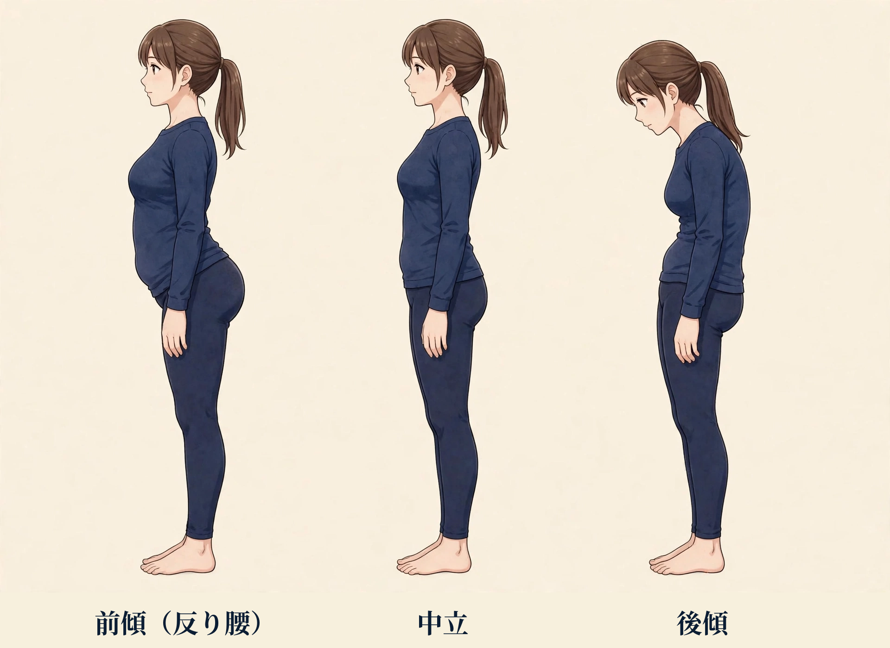

PELVIS & POSTURE
骨盤と姿勢の仕組み
姿勢の土台である骨盤は、前傾・中立・後傾で背骨や脚のラインがどう変わるのでしょうか。心斎橋での歩き方や座り方と結びつけながら、仕組みを解説します。御堂筋線の通勤や長時間の座り姿勢、ヒールでの歩行など、心斎橋の日常で起こりやすい傾きの場面を取り上げながら読み解いていきます。
骨盤は姿勢の土台｜上半身と脚をつなぐ要
骨盤は、背骨の土台であると同時に、左右の脚とつながる要の骨格です。正面から見るとボウルのような形をし、上には背骨が乗り、下には大腿骨が関節でつながっています。そのため骨盤の傾きが変わると、背骨のカーブも、脚の向きや重心の位置も連動して変わります。立つ姿勢では骨盤が安定しているほど上半身は無駄な力を使わずにいられますし、座る姿勢では骨盤のどの部分で体重を受けるかで背中の形が決まります。心斎橋駅のホームで電車を待つとき、オフィスの椅子に座るとき、家でくつろぐとき、それぞれ骨盤の状態は違います。姿勢を考えるときに骨盤から見るのは、この土台が全体の出発点になるからです。図1のとおり、骨盤の傾きは前傾・中立・後傾の3つの状態で捉えることができます。骨盤の中には大切な臓器が収まり、体幹の筋肉が内側と外側から支えています。骨盤が安定すると呼吸に使う横隔膜とお腹の深い筋肉が連動しやすくなり、姿勢を保つ土台がよりしっかりします。反対に位置が大きく偏ると、体は他の部分でバランスを取ろうとして、腰や首など離れた場所に負担が集まることがあります。 骨盤を要として見る見方は、腰だけの話ではありません。骨盤の上に背骨が乗り、その上に頭が載るという積み重ねの構造上、土台の傾きは首や肩の位置にまで影響します。逆に、頭の位置や肩の使い方も骨盤へ影響を返します。全身を一つの積み木として捉えることが、姿勢を理解する近道です。

中立とはどのような状態か｜無理のない位置の目安
骨盤の中立とは、前にも後ろにも傾きすぎていない、バランスの取れた位置のことです。専門的には骨盤の前面と側面の出っ張りを目安に判断しますが、日常では「腰に過度な反りも丸みもなく、背骨が自然なカーブを描いている状態」と捉えると分かりやすいでしょう。中立の位置では、耳、肩、骨盤の側面、膝、くるぶしが側面から見ておおむね縦のラインに近づき、体重が足裏全体に分散しやすくなります。ただし中立は全員が同じ角度という意味ではありません。骨格の形や筋肉のつき方には個人差があり、その人にとって無理のない範囲が中立です。鏡の前で無理に姿勢を作るのではなく、力を抜いて立ったときに腰や首に余計な張りが出ない位置を探すことが、自分の目安を知る近道になります。目安を知る方法として、壁に背中をつけて立つ確認があります。後頭部、背中、お尻、かかとを壁に近づけたとき、腰の後ろに手のひら一枚分ほどの隙間がある状態が自然なカーブの一つの目安といわれます。座った状態では、左右のお尻の骨に均等に体重が乗っている感覚も目安になります。 中立の感覚は、一度分かると日常でも思い出しやすくなります。電車を待つホームで、椅子に座る瞬間に、鏡の前で着替える時間に、短く確認するだけでも構いません。感覚は使うほど育ちます。最初は分かりにくくても、施術で一緒に確認する経験を重ねることで、自分の基準が少しずつはっきりしていきます。
前傾と反り腰｜現実的な崩れの範囲で理解する
骨盤の前傾とは、骨盤の上部が前方へ倒れる傾きのことです。前傾が強まると腰のカーブが深くなり、いわゆる反り腰の姿勢に近づきます。ここで大切なのは、日常で見られる反り腰は現実的な範囲の傾きだという点です。写真やイラストで誇張されるような極端な反りは、実際の立ち姿ではまれです。多くの場合は、ヒールを履く時間が長い、太ももの前側の筋肉が張っている、お腹まわりの筋肉が働きにくい、といった要因が重なり、骨盤が少し前に傾いて腰の反りがやや強くなっている程度です。この状態が続くと、腰の後ろ側に圧迫感を覚えたり、太ももの前が張りやすくなったり、お腹が前に出て見えたりすることがあります。反対に前傾そのものが悪いわけではなく、動作の中では必要な傾きでもあります。問題は傾いたまま戻りにくくなることです。施術では太ももの前や付け根の張りをゆるめ、お腹やお尻の筋肉が働きやすい状態を整えることで、前傾が戻りやすい土台作りを目指します。傾きそのものより、戻れるかどうかが重要な視点です。 前傾への対処で大切なのは、腰を無理に反らさないことでも、逆に丸め続けることでもありません。前と後ろの筋肉の綱引きを整え、傾きが戻れる幅を取り戻すことです。ヒールを履く日が多い方は、履かない日との体の違いを比べてみると、自分の傾きのパターンが見えてきます。違いを知ることが対策の第一歩です。
後傾と猫背のつながり｜座り姿勢で起こりやすい理由
骨盤の後傾は、骨盤の下部が前方へせり出すように後ろへ倒れる傾きです。椅子に浅く腰かけて背もたれに寄りかかる座り方や、ソファに沈み込む座り方で起こりやすく、腰のカーブが平らになって背中が丸まる猫背の姿勢につながります。ミナミのオフィスで長時間デスクワークをする方や、カフェでスマートフォンを見ながら長く座る方は、この後傾の姿勢が習慣になりやすい場面が多くあります。後傾が続くと、背中や首の後ろの筋肉が引き伸ばされたまま働き続け、肩まわりの重さや頭が前に出る姿勢の背景になることがあります。また骨盤が後ろに倒れると太ももの裏側の筋肉が張りやすく、立ち上がったときに腰が伸びにくい感覚につながることもあります。座る時間が長い方ほど、骨盤の傾きを途中でリセットする意識が大切です。床に脚を伸ばして座る姿勢でも後傾は起こります。脚を伸ばすと太ももの裏が引っ張られ、骨盤が後ろに倒れやすくなるためです。クッションを骨盤の後ろに当てて傾きを支える工夫が、背中の丸まりを和らげる助けになります。 後傾の姿勢は楽に感じることが多いため、気づかないうちに長く続いてしまいます。楽さと負担の少なさは必ずしも一致しません。座る時間が長い方は、30分から1時間ごとに一度立ち上がる、座面の高さを調整する、足裏全体を床につける、といった小さな見直しが助けになります。環境を整えることも立派なケアです。
傾きを決めるのは筋肉の綱引き｜前と後ろ、表と裏
骨盤の傾きは、骨だけで決まるのではなく、骨盤の前後・上下につく筋肉の綱引きで保たれています。前に傾ける側には太ももの付け根の筋肉や腰の筋肉が関わり、後ろに傾ける側にはお腹の筋肉やお尻の筋肉、太ももの裏の筋肉が関わります。どちらか一方の働きが強くなったり弱くなったりすると、綱引きのバランスが崩れて傾きが固定されやすくなります。たとえば座りっぱなしの生活では、お腹やお尻の筋肉を使う機会が減る一方で、太ももの付け根は縮んだ姿勢のまま過ごす時間が長くなります。これが前傾にも後傾にも偏りやすくなる背景の一つです。ステラアルファード心斎橋では、骨盤だけを無理に動かすのではなく、周囲の筋肉の張りと働きを一緒に見て、傾きが戻りやすい状態を目指して施術を組み立てています。綱引きのバランスは年齢や運動の習慣によっても変わります。歩く機会を増やす、階段を使うといった日常の活動だけでも、お尻やお腹の筋肉の出番は確実に増えます。ゆるめることと日常で使うことの両方がそろって、骨盤の位置は保たれやすくなります。 綱引きの考え方は、ストレッチの選び方にも役立ちます。張っている側を伸ばすだけでなく、弱くなっている側を使う動きを組み合わせることで、傾きは戻りやすくなります。どちらか一方だけでは片手落ちになりやすいため、施術後のセルフケアでも両方をセットでご案内しています。バランスは、両側から整えるものです。
日常でできる骨盤リセットの工夫｜座る・立つ・歩く
骨盤の傾きは、日常の小さな工夫でリセットの機会を作れます。座るときは椅子に深く腰かけ、左右のお尻の骨で均等に体重を受ける意識を持つと骨盤が立ちやすくなります。デスクワークの合間には1時間に一度は立ち上がり、軽く腰を反らしたり丸めたりして、固まった傾きを動かすことが助けになります。御堂筋線の通勤では、立っているときに片足だけに体重を乗せ続けないよう、時々重心を入れ替えることも小さな工夫です。心斎橋からなんばまで歩くときは歩幅を少し広げてお尻の筋肉を使う意識を持つと、骨盤まわりの筋肉が働きやすくなります。買い物で長時間歩いた日は、帰宅後に数分ゆっくり歩いてから休むと体の切り替えがしやすくなります。完璧を目指す必要はありません。気づいたときに直す、その繰り返しが姿勢の土台を支えます。立ったまま骨盤を前後にゆっくり揺らす動きも、固まった傾きを動かす簡単な方法です。前傾と後傾の両方へ動かすことで、その中間にある中立の位置を感覚として思い出すことができます。小さなリセットを日常に散りばめることが、現実的で続けやすい方法です。 リセットの習慣は、完璧に毎日行う必要はありません。思い出したときに一度行うだけでも、固まり続ける状態とは違います。心斎橋駅の階段を使う日、なんばまで歩く日、椅子から立つ瞬間など、暮らしの中の場面と結びつけておくと続けやすくなります。小さな実践の積み重ねが、土台の安定を支えていきます。
関連する症状・お悩み
よくあるご質問
骨盤のゆがみと傾きは同じですか？
一般にゆがみと呼ばれるものの中には、傾きや左右差、ねじれの要素が含まれます。この解説では主に前後の傾きを取り上げています。状態には個人差があります。
反り腰はすぐに直したほうがよいですか？
現実的な範囲の前傾は珍しいものではありません。腰に負担感が続く場合は、筋肉のバランスを含めて専門家に状態を見てもらうことをおすすめします。
ヒールを履くと骨盤は傾きますか？
ヒールでは重心が前に寄りやすく、太ももの前やふくらはぎに力が入り続けるため、前傾と関わる場面があります。履いた日のケアも合わせて考えることが大切です。
施術では骨盤を強く動かしますか？
無理のない範囲で周囲の筋肉の状態を見ながら働きかけます。強い力を加えることだけを目的とした施術は行いません。
専門解説シリーズ
施術者について
平賀 伸人（ひらが のぶひと／男性セラピスト）｜施術歴30年。鍼灸師（国家資格）・登録販売者・アロマセラピスト・パーソナルトレーナーの資格を持ち、オイルマッサージと美容整体を、その日の状態とご希望に合わせて組み合わせて施術します。このページの内容は、施術者の知識と経験をもとに作成しています。
料金・店舗情報
オイルマッサージ＋美容整体 90分 10,000円（税込）｜コースは1つだけです。有料の追加オプションの販売はありません。お支払いは現金のみです。
住所：大阪市中央区心斎橋筋1丁目4-28 大宝ビル302（心斎橋駅・大阪メトロ御堂筋線から徒歩1分）｜営業時間：月〜土 17:00〜22:00・日曜休み｜女性専用・完全予約制｜当サロンでは鍼灸施術は行いません。
ご予約・お問い合わせ
ご予約はLINE公式アカウントで受け付けています。ご希望の日時をお送りください。変更・キャンセルはLINEでご連絡ください。キャンセル料はいただきません。